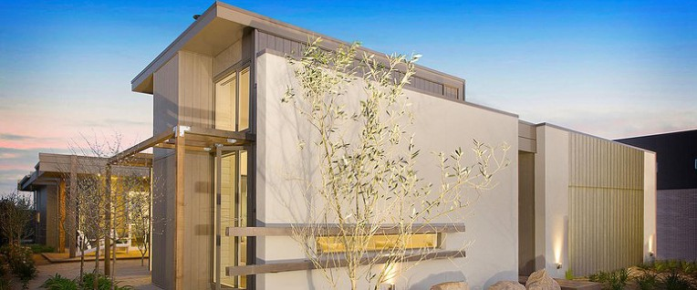

외단열 시스템(EIFS ㆍ Exterior Insulation Finishing Systems) 은 단열성능에 따른 외벽 두께 최소화, 다양한 마감면 형성 가능, 유지보수의 용이성, 마감을 위한 자재물량 최소화 및 경량 마감 가능이라는 여러 장점을 갖고 있으나, 설계 또는 시공방식에 따라 결과의 편차가 다른 공법에 비해 크게 나타나는 특징을 갖고 있습니다.

● 외단열 시스템 시공방법
국내외 외단열 시스템 제품 유형은 구조체에 외단열 시스템을 고정시키는 방법에 따라 크게 ▷습식, ▷반건식, ▷건식(통기식)으로 구분할 수 있으며, 대부분의 외단열 시스템 공사에서는 접착재료로 고정하는 습식공법이 일반적으로 사용되고 있습니다
외단열 시스템 시공, 습식공법이 가장 일반적 방법
< 외단열 시스템 습식공법 시공순서 및 방법 >
STEP 1. 바탕판재 시공
· 바탕판재는 설계상 바탕판재가 있는 경우 시공하며, 일반적인 외단열은 콘크리트/조적면에 시공함
▽
STEP 2. EPS 보드 시공
· 접착재료 혼합
· EPS보드 위에 접착모르타르 시공
· EPS보드 설치
▽
STEP 3. 메쉬, 접착모르타르 시공
· 최소한의 접착모르타르 두께는 메쉬가 완전히 함침될 수 있도록 충분해야 함
· 일반시공, 개구부시공, 단부시공 방식 고려
▽
STEP 4. 부자재 시공시
· 헤비메쉬, 코너비드, 스타트 트랙 설치
▽
STEP 5. 마감재 시공
· 마감재는 자연적인 마감선까지 습윤한 마감상태에서 연속 시공 되어야 함
▽
STEP 6. 조인트 실런트 시공
· 접착모르타르에만 실런트를 시공하고 마감재에는 실런트를 시공하지 않음
▽
STEP 7. 청소
· 외단열 시공을 위해 설치된 모든 임시 보호물들을 제거
▽
STEP 8. 시공품질 검사
· 현장품질관리
· 제3자 검사자 승인
외단열 시스템을 시공하는데 있어 가장 기초가 되는 것은 바탕면의 처리입니다.
이는 평활도와 함께 청결함을 유지해야한다는 의미인데, 접착재료의 성능이 아무리 우수해도 바탕면에 이물질이 있으면 충분한 접착강도를 확보하기 어렵기 때문입니다.
단열재의 접착이나 마감재로 사용되는 재료는 표면온도 5℃ 이상의 날씨에서 시공하는 것이 좋으며, 비나 눈이 오는 날은 피하는 것이 좋습니다.
특히 접착재료의 성분은 무기질계와 유기질계, 그리고 유기와 무기 혼합형 등이 모두 허용되며 재료의 성질보다 중요한 것은 접착력의 확보이니 이에 유의해야 할 것 입니다.
준불연 가등급 EPS 단열재 DK보드
건축용 / 외단열용 / 판넬용
문의 1855-2240